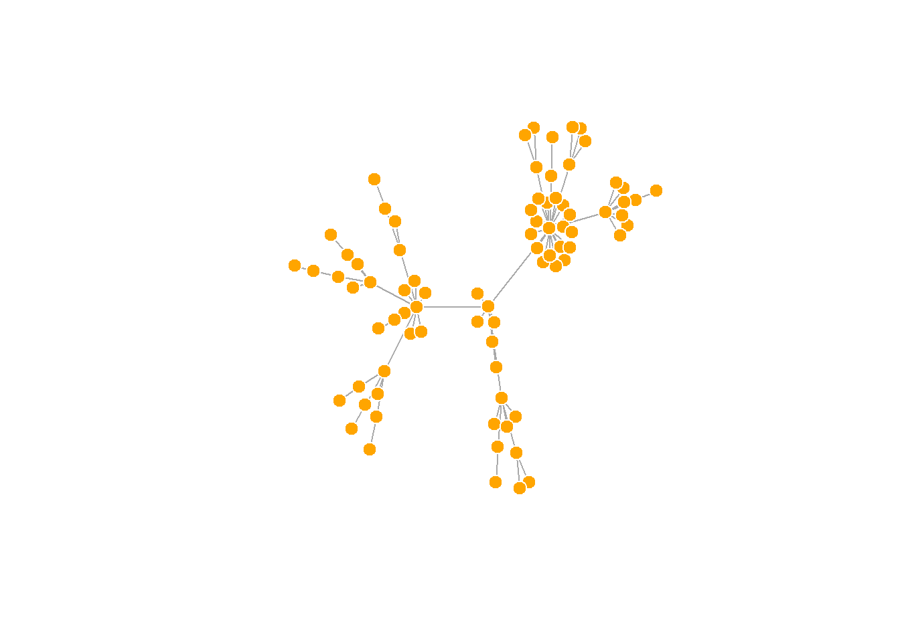
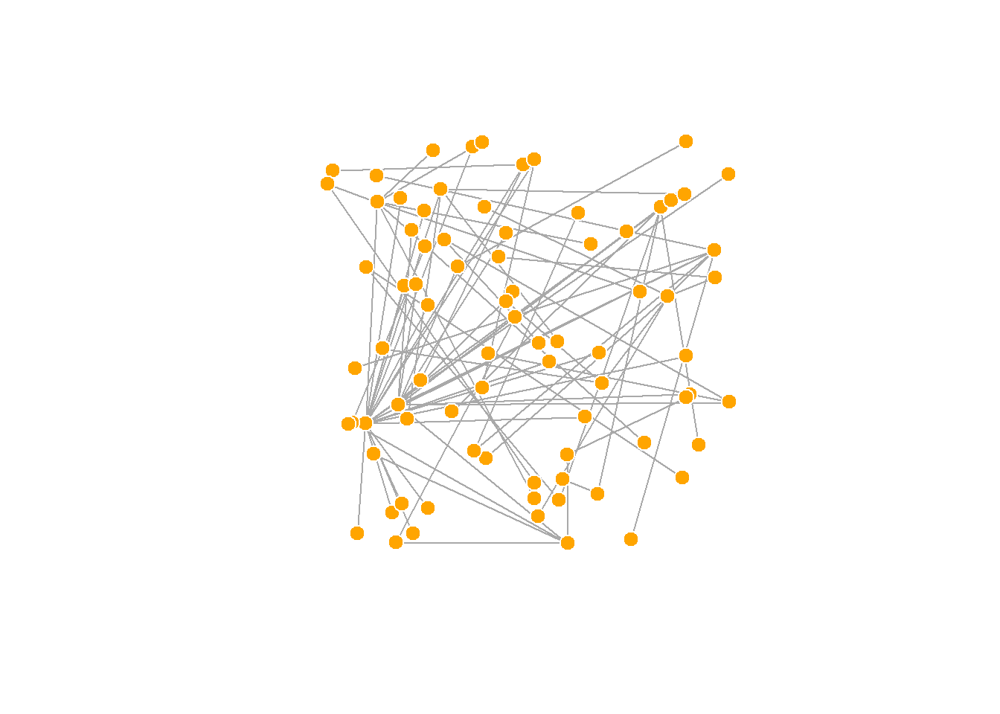
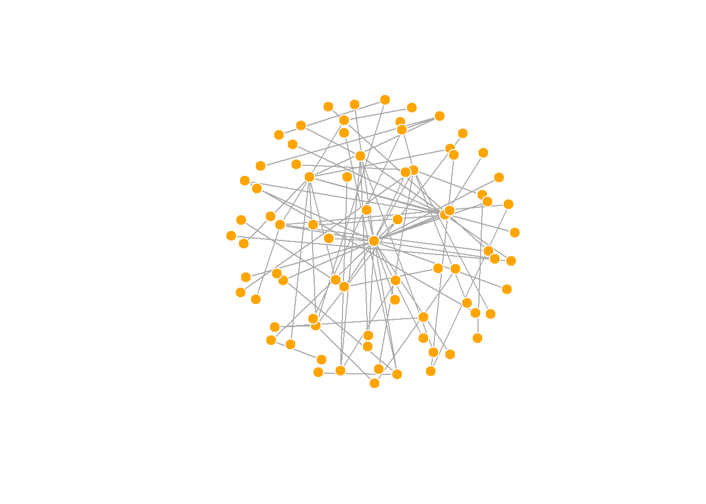
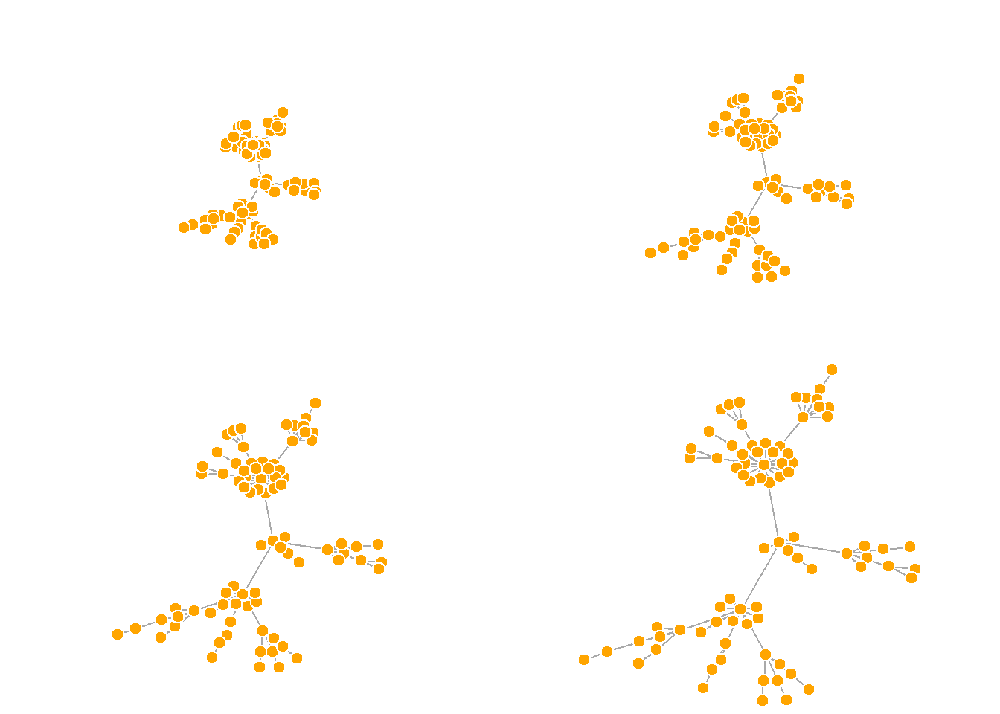

5.1 Network layouts
네트워크 레이아웃(Network layouts)은 네트워크 내에 있는 각 노드에 대한 좌표를 반환하는 단순 알고리듬이다.
레이아웃을 이해하기 위해 약간 규모가 큰 80개 노드로 구성된 그래프를 생성하기로 한다. 사전에 설정된 선호도 수준에 따라 하나의 노드에서 시작해서 더 많은 노드와 에지를 추가하는 단순 그래프를 생성하는 sample_pa() 함수를 사용한다(Barabasi-Albert model).
net.bg <- sample_pa(80)
V(net.bg)$size <- 8
V(net.bg)$frame.color <- "white"
V(net.bg)$color <- "orange"
V(net.bg)$label <- ""
E(net.bg)$arrow.mode <- 0
plot(net.bg)
plot() 함수 안에 레이아웃을 설정할 수 있다:
plot(net.bg, layout=layout_randomly)
또는 먼저 노드의 좌표를 계산할 수 있다 :
l <- layout_in_circle(net.bg)
l## [,1] [,2]
## [1,] 1.000000e+00 0.000000e+00
## [2,] 9.969173e-01 7.845910e-02
## [3,] 9.876883e-01 1.564345e-01
## [4,] 9.723699e-01 2.334454e-01
## [5,] 9.510565e-01 3.090170e-01
## [6,] 9.238795e-01 3.826834e-01
## [7,] 8.910065e-01 4.539905e-01
## [8,] 8.526402e-01 5.224986e-01
## [9,] 8.090170e-01 5.877853e-01
## [10,] 7.604060e-01 6.494480e-01
## [11,] 7.071068e-01 7.071068e-01
## [12,] 6.494480e-01 7.604060e-01
## [13,] 5.877853e-01 8.090170e-01
## [14,] 5.224986e-01 8.526402e-01
## [15,] 4.539905e-01 8.910065e-01
## [16,] 3.826834e-01 9.238795e-01
## [17,] 3.090170e-01 9.510565e-01
## [18,] 2.334454e-01 9.723699e-01
## [19,] 1.564345e-01 9.876883e-01
## [20,] 7.845910e-02 9.969173e-01
## [21,] 6.123032e-17 1.000000e+00
## [22,] -7.845910e-02 9.969173e-01
## [23,] -1.564345e-01 9.876883e-01
## [24,] -2.334454e-01 9.723699e-01
## [25,] -3.090170e-01 9.510565e-01
## [26,] -3.826834e-01 9.238795e-01
## [27,] -4.539905e-01 8.910065e-01
## [28,] -5.224986e-01 8.526402e-01
## [29,] -5.877853e-01 8.090170e-01
## [30,] -6.494480e-01 7.604060e-01
## [31,] -7.071068e-01 7.071068e-01
## [32,] -7.604060e-01 6.494480e-01
## [33,] -8.090170e-01 5.877853e-01
## [34,] -8.526402e-01 5.224986e-01
## [35,] -8.910065e-01 4.539905e-01
## [36,] -9.238795e-01 3.826834e-01
## [37,] -9.510565e-01 3.090170e-01
## [38,] -9.723699e-01 2.334454e-01
## [39,] -9.876883e-01 1.564345e-01
## [40,] -9.969173e-01 7.845910e-02
## [41,] -1.000000e+00 1.224606e-16
## [42,] -9.969173e-01 -7.845910e-02
## [43,] -9.876883e-01 -1.564345e-01
## [44,] -9.723699e-01 -2.334454e-01
## [45,] -9.510565e-01 -3.090170e-01
## [46,] -9.238795e-01 -3.826834e-01
## [47,] -8.910065e-01 -4.539905e-01
## [48,] -8.526402e-01 -5.224986e-01
## [49,] -8.090170e-01 -5.877853e-01
## [50,] -7.604060e-01 -6.494480e-01
## [51,] -7.071068e-01 -7.071068e-01
## [52,] -6.494480e-01 -7.604060e-01
## [53,] -5.877853e-01 -8.090170e-01
## [54,] -5.224986e-01 -8.526402e-01
## [55,] -4.539905e-01 -8.910065e-01
## [56,] -3.826834e-01 -9.238795e-01
## [57,] -3.090170e-01 -9.510565e-01
## [58,] -2.334454e-01 -9.723699e-01
## [59,] -1.564345e-01 -9.876883e-01
## [60,] -7.845910e-02 -9.969173e-01
## [61,] -1.836910e-16 -1.000000e+00
## [62,] 7.845910e-02 -9.969173e-01
## [63,] 1.564345e-01 -9.876883e-01
## [64,] 2.334454e-01 -9.723699e-01
## [65,] 3.090170e-01 -9.510565e-01
## [66,] 3.826834e-01 -9.238795e-01
## [67,] 4.539905e-01 -8.910065e-01
## [68,] 5.224986e-01 -8.526402e-01
## [69,] 5.877853e-01 -8.090170e-01
## [70,] 6.494480e-01 -7.604060e-01
## [71,] 7.071068e-01 -7.071068e-01
## [72,] 7.604060e-01 -6.494480e-01
## [73,] 8.090170e-01 -5.877853e-01
## [74,] 8.526402e-01 -5.224986e-01
## [75,] 8.910065e-01 -4.539905e-01
## [76,] 9.238795e-01 -3.826834e-01
## [77,] 9.510565e-01 -3.090170e-01
## [78,] 9.723699e-01 -2.334454e-01
## [79,] 9.876883e-01 -1.564345e-01
## [80,] 9.969173e-01 -7.845910e-02plot(net.bg, layout=l)
l 은 그래프에 있는 N개 노드에 대하여 단순히 x, y 좌표로 구성되는 (N x 2) 행렬이다. 쉽게 생성할 수 있다 :
l <- cbind(1:vcount(net.bg), c(1, vcount(net.bg):2))
l## [,1] [,2]
## [1,] 1 1
## [2,] 2 80
## [3,] 3 79
## [4,] 4 78
## [5,] 5 77
## [6,] 6 76
## [7,] 7 75
## [8,] 8 74
## [9,] 9 73
## [10,] 10 72
## [11,] 11 71
## [12,] 12 70
## [13,] 13 69
## [14,] 14 68
## [15,] 15 67
## [16,] 16 66
## [17,] 17 65
## [18,] 18 64
## [19,] 19 63
## [20,] 20 62
## [21,] 21 61
## [22,] 22 60
## [23,] 23 59
## [24,] 24 58
## [25,] 25 57
## [26,] 26 56
## [27,] 27 55
## [28,] 28 54
## [29,] 29 53
## [30,] 30 52
## [31,] 31 51
## [32,] 32 50
## [33,] 33 49
## [34,] 34 48
## [35,] 35 47
## [36,] 36 46
## [37,] 37 45
## [38,] 38 44
## [39,] 39 43
## [40,] 40 42
## [41,] 41 41
## [42,] 42 40
## [43,] 43 39
## [44,] 44 38
## [45,] 45 37
## [46,] 46 36
## [47,] 47 35
## [48,] 48 34
## [49,] 49 33
## [50,] 50 32
## [51,] 51 31
## [52,] 52 30
## [53,] 53 29
## [54,] 54 28
## [55,] 55 27
## [56,] 56 26
## [57,] 57 25
## [58,] 58 24
## [59,] 59 23
## [60,] 60 22
## [61,] 61 21
## [62,] 62 20
## [63,] 63 19
## [64,] 64 18
## [65,] 65 17
## [66,] 66 16
## [67,] 67 15
## [68,] 68 14
## [69,] 69 13
## [70,] 70 12
## [71,] 71 11
## [72,] 72 10
## [73,] 73 9
## [74,] 74 8
## [75,] 75 7
## [76,] 76 6
## [77,] 77 5
## [78,] 78 4
## [79,] 79 3
## [80,] 80 2plot(net.bg, layout=l)
사전에 네트워크 레이아웃을 설정하고 이를 적용하는 것도 가능하다. 또한 igraph 패키지에 내장된 네트워크 레이아웃 함수는 다음과 같다.
layout.random(): 임의 네트워크 배치layout.circle(): 원형태 네트워크 배치layout.sphere(): 구형태 네트워크 배치
이 레이아웃은 단지 예를 든 것이며 크게 도움이 되는 것은 아니다. 다행히도 igraph는 다음과 같은 다양한 내장된 레이아웃을 가지고 있다 :
# 정점을 무작위로 배치하기
l <- layout_randomly(net.bg)
plot(net.bg, layout=l)
# 원형 레이아웃
l <- layout_in_circle(net.bg)
plot(net.bg, layout=l)
# 3D 구형 레이아웃
l <- layout_on_sphere(net.bg)
plot(net.bg, layout=l)
- 그 밖의 레이아웃 함수들 :
layout_as_bipartite(),layout_as_star(),layout_as_tree(),layout_in_circle(),layout_nicely(),layout_on_grid(),layout_on_sphere(),layout_randomly(),layout_with_dh(),layout_with_fr(),layout_with_gem(),layout_with_graphopt(),layout_with_kk(),layout_with_lgl(),layout_with_mds(),layout_with_sugiyama()
심미적으로 보기 좋은 네트워크 그래프를 얻기 위해 많은 알고리즘이 제안되었고, Fruchterman-Reingold 알고리즘을 비롯한 다양한 알고리즘이 존재한다. 물리학에서 가져온 스프링, 힘 등의 개념을 노드와 엣지에 적용하여 컴퓨터의 도움을 얻어 데이터가 크지 않은 경우 빠른 시간내에 시각화가 가능하다.
Fruchterman-Reingold 알고리즘인 layout_with_fr() 함수는 심미적으로 보기 좋은 네트워크 그래프를 위한 레이아웃 알고리즘 중의 하나이다. Force-directed 네트워크 배치 알고리즘은 에지 길이가 비슷하고, 엣지가 가능하면 서로 거의 겹치지 않는 그래프를 생성하고자 한다. 이는 물리시스템으로 그래프를 모의시험한다. 노드는 서로 가까워지면 서로 밀어내는 성질을 갖는 전기적 성격을 갖는 입자이며, 에지는 연결된 노들들을 서로 가깝게 끌어들이는 스피링처럼 동작한다.
결과적으로 노드는 시각화 평면에 골고루 분산되어 위치하게 되고, 더 많은 연결점을 갖는 노드는 서로 더 가까이 위치하게 된다는 점에서 직관적이다. 이런 유형의 알고리즘이 갖는 단점은 실행 시간에 오래 걸리며, 따라서 ~ 1,000 개보다 큰 노드를 갖는 그래프에는 잘 사용되지 않는다. 일부 모수를 조정해서 네트워크 그래프를 조정하는 것도 가능하다.
area: 기본 설정값으로 노드 제곱repulserad: 밀어내는 반경weight: 노드 사이 끌림을 증대
예를 들어, weight 인수를 이용하여 강한 에지로 연결되는 노드 사이의 매력도를 증가시킬 수 있다.
l <- layout_with_fr(net.bg)
plot(net.bg, layout=l)이 레이아웃은 확정적이지 않다는 것을 알 수 있다. 시행할 때마다 결과는 약간씩 다를 것이다. 레이아웃을 변수 l에 저장하면 여러분 동일한 결과를 가질 수 있게 해 준다. 즉, 그래프의 시간에 따른 진화를 시각화하거나, 또는 서로 다른 관계성을 시각화하고자 할 때 도움이 될 수 있으며, 노드들이 여러 플롯에서 같은 장소에 위치하게 하고자 할 때도 도움이 된다.
par(mfrow=c(2,2), mar=c(0,0,0,0)) # 2행 2열로 4개의 그림 그리기
plot(net.bg, layout=layout_with_fr) #
plot(net.bg, layout=layout_with_fr) # 위의 레이아웃과 다름
plot(net.bg, layout=l) #
plot(net.bg, layout=l) # 위의 레이아웃과 같음dev.off()## null device
## 1기본 값으로, 플롯의 좌표들은 x와 y 모두 [-1, 1] 구간으로 재설정된다. 이 구간은 rescale = FALSE 파라미터로 변경할 수 있으며, 좌표에 상수 값을 곱해서도 수작업으로 재설정할 수 있다.
또한 norm_coords() 함수를 이용하여 우리가 원하는 경계로 플롯을 정규화할 수도 있다.
l <- layout_with_fr(net.bg)
l <- norm_coords(l, ymin=-1, ymax=1, xmin=-1, xmax=1)
par(mfrow=c(2,2), mar=c(0,0,0,0))
plot(net.bg, rescale=F, layout=l*0.4)
plot(net.bg, rescale=F, layout=l*0.6)
plot(net.bg, rescale=F, layout=l*0.8)
plot(net.bg, rescale=F, layout=l*1.0)
dev.off()## null device
## 1fruchterman.reingold.grid() 함수는 fruchterman.reingold()와 유사하지만 속도가 더 빠르다.
또 다른 알고리즘으로 Kamada Kawai 알고리즘인 layout_with_kk() 함수가 있다. Fruchterman Reingold 처럼 스프링 시스템에서의 에너지를 최소화하고자 한다.
l <- layout_with_kk(net.bg)
plot(net.bg, layout=l)
LGL 알고리즘인 layout_with_lgl() 함수는 대규모(large)의 연결된 그래프를 의미한다. 여기에서 레이아웃을 중심에 위치하는 root를 지정할 수 있다.
plot(net.bg, layout=layout_with_lgl)
igraph 패키지에서 이용가능한 모든 레이아웃들은 다음과 같이 살펴볼 수 있다 :
? igraph::layout_
layouts <- grep("^layout_", ls("package:igraph"), value=TRUE)[-1]
# 우리의 그래프에 적용되지 않는 레이아웃 제거
layouts <- layouts[!grepl("bipartite|merge|norm|sugiyama|tree", layouts)]
par(mfrow=c(3,3), mar=c(1,1,1,1))
for (layout in layouts) {
print(layout)
l <- do.call(layout, list(net))
plot(net, edge.arrow.mode=0, layout=l, main=layout)
}## [1] "layout_as_star"## [1] "layout_components"## [1] "layout_in_circle"## [1] "layout_nicely"## [1] "layout_on_grid"## [1] "layout_on_sphere"## [1] "layout_randomly"## [1] "layout_with_dh"## [1] "layout_with_drl"
## [1] "layout_with_fr"## [1] "layout_with_gem"## [1] "layout_with_graphopt"## [1] "layout_with_kk"## [1] "layout_with_lgl"## [1] "layout_with_mds"